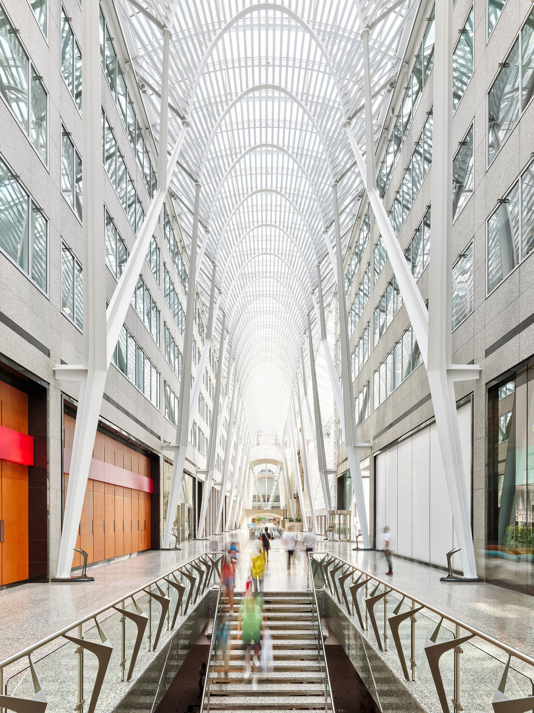

My recommendation
Plan A. Stop treating Toronto like a checklist.
Do the fixed transport and karts on time, eat properly, then use the evening for 401 Richmond, The Well, CN/Harbourfront around sunset, the Allen Lambert Galleria/PATH, snacks and actual hanging out. The schedule is controlled without making every minute sacred.
Before boarding GOCheck Mini Indy once.Thursday pricing is $3 per lap including HST. It is outdoors, so a wet track is the one real uncertainty.
(437) 488-4667
At one glance
Plan A · Hidden spots + late chill
Exact movement
Time-by-time timeline
Green = GO bus, teal = GO train, red = TTC, blue = walking. Walking opens Google Maps; time-sensitive GO/TTC legs show the planned time and open the official operator planner.
Built into this page
Your route map
A real geographic overview stays on the page without loading map tiles. The swipe strip below keeps every stop and planned time easy to follow.
Guelph → Mississauga → Toronto
Open map ↗Downtown detail
Open map ↗Important: Google’s universal Maps links cannot lock a transit trip to our future departure time. So GO/TTC buttons below open the operator planner instead of pretending the current-time result is our schedule. Walking buttons still open Google Maps normally.
Fast by design. The maps above are generated locally from the itinerary coordinates: no Leaflet, no map tiles, no giant world view. Use Google Maps for walking/navigation and GO/TTC for time-sensitive transit.
Eat once, eat properly
Big halal meal + realistic budget
Your friends can order differently. The safe budget is deliberately wider than one exact receipt, so nobody has to copy your plate.
Magical Taste of China · 476 Dundas St W
The main meal should carry the rest of the day.
Best-value starting order: the big-plate chicken with an extra noodle, three lamb kabobs and beef-onion dumplings. It is built to feed three without automatically over-ordering. Eat first, then add another dish only if the table still wants it. Ask for water and get drinks here too.
Safe group cap · selected plan
~$230–260
GO: the 3-person weekday group pass is $40 total and covers the GO buses/train in the plan. Buy it online, keep it on one charged phone, and activate it at least five minutes before the first GO ride. TTC is separate.
No private payment note is stored on this public page. Whoever pays can settle up later; the site only shows the group total and per-person estimate.
Best-value first order for three
| Xinjiang big-plate chicken | $29.99 |
| Extra thin noodle for the chicken | $4.99 |
| 3 lamb kabobs · one each | $11.97 |
| Beef + onion dumplings | $15.99 |
| Subtotal | $62.94 |
| Ontario HST · 13% | $8.18 |
| Food total | $71.12 group |
| 3 bottled waters / soft drinks | +$6.75 tax-in |
| Tip included in estimate | $0.00 · optional |
Current online-menu benchmark: ~$77.87 group with three $1.99 drinks/waters after HST, or about $25.96 each. Dine-in prices can differ, so keep $90–110 group available if you add another dish. Tipping is optional; check the receipt for any automatic service charge.
Hot-day basics
Water + washrooms without stupid breaks
These are stops you already pass. Nobody needs a 40-minute “hydration activity.”
Toronto stops that earned a place
Not another mall + arcade day
These are there because they fit what you asked for: indoors/shade, architecture, unusual spaces, photos or a useful reset.
401 Richmond + Museum of Toronto
A restored heritage arts building with brick, old wood, galleries and the free “The T.O. You Don't Know” exhibition downstairs. Thursday museum hours are noon–6 p.m.; washrooms available.
$0Official visit info ↗Allen Lambert Galleria + PATH
The closest match to your “walk into a building and it takes us somewhere else” idea: huge glass-and-steel interior at Brookfield Place connected to Toronto's underground PATH. Do a short PATH section if the connecting doors are open.
$0PATH info ↗
The Well → CN → Harbourfront
The Well gives you covered architecture, refill/washrooms/charging. Then do one compact photo walk south and hit the waterfront close to sunset instead of roasting there at 4 p.m.
Mostly $0The Well amenities ↗Checked for Thursday
What can actually break the plan
Posted hours and schedules are useful; live operations can still change after this page was built. Yellow means re-check the same day.
Core stops checked
Places
Square OneOnly a 20-minute washroom/coffee/water pit stop in this plan.
Hours ↗Mississauga Mini IndyThursday deal: $3/lap including HST. Outdoor track; weather is the issue.
Official ↗Magical Taste of ChinaHalal Dundas location; current online menus used only as price benchmarks.
Maps ↗Museum of Toronto · 401 RichmondThursday noon–6 p.m.; free admission and washrooms listed.
Visit ↗The WellWater refill, washrooms and charging are official listed amenities.
Amenities ↗Longo's Maple Leaf SquarePlan A snack stop; official store page lists daily 7 a.m.–10 p.m. and accessible bathroom.
Store ↗ Transport + weather
Things to re-check live
GO before every fixed departureThese are the active pre-Sept.-5 weekday schedules for Thursday Sept. 3. Live boards still win if service changes.
GO ↗Mini Indy track conditionCall if the pavement is wet or showers develop. Do not waste an hour waiting on a closed track.
Call ↗WeatherGuelph high 26 / humidex 33; Mississauga 28 / humidex 35; Toronto 27 / humidex 34. About 30% late-afternoon shower risk; Mini Indy is earlier when risk is lower.
Forecast ↗TTC check · Lines 1 & 2 normalSubway Lines 1 and 2 are showing normal service this morning. The 510 streetcar has a Queens Quay–Union interruption, so the plan keeps the waterfront section on foot instead of depending on it.
TTC ↗Odyssey IMAX · 6:40 p.m.The 6:40 IMAX listing is still showing this morning. Seat inventory can change, so open Cineplex before committing after dinner.
Cineplex ↗Nothing here requires blind faith.Every fixed transport/activity has a live or official link on this page. Use those if reality disagrees with the schedule.
ID + what to carry
You do not need a G licence for a normal single kart
Bring physical photo ID anyway because it weighs nothing and removes arguments at age-restricted places or ticket desks.
You're fine.
For this itinerary
- Regular single go-kart: Mini Indy does not post a driver's-licence requirement for the regular adult single kart. The full G licence rule is for driving a double kart with a child passenger.
- GO group pass: keep the activated live pass on the phone used to buy it.
- Restaurant, museum, The Well, PATH, waterfront and regular IMAX: ordinary entry does not depend on having a G1.
Bring
- Friends: physical G1 cards are fine photo ID to carry.
- You: physical Canadian PR card is useful government photo ID.
- All three: charged phones, one power bank, comfortable shoes, water bottle.
- Sunscreen + a light rain layer or tiny umbrella because of UV 7 / shower risk.
If reality changes
Three backups — that's enough
No twenty-item contingency manual.
Miss the 11:28 GO bus?
Stop using the fixed times on this page. Open GO's live planner, take the next sensible Square One option, and remove 401 Richmond first if the delay threatens its 6 p.m. museum close.
Karts closed?
If dry: use Kariya Park only as a short 25–30 minute Japanese-garden/photo backup near Square One. If wet/raining: stay indoors, use the washroom/coffee stop, and take the earliest sensible GO bus downtown. Do not replace wet karts with a wet “park tour.”
Kariya directions ↗Two return anchors
Plan B: Union 10:34 p.m. → Guelph Central 12:05 a.m. Plan A: Kipling 11:55 p.m. → Guelph Central about 1:35 a.m. If 1:35 is too late once you're tired, bail to the 10:34 train.